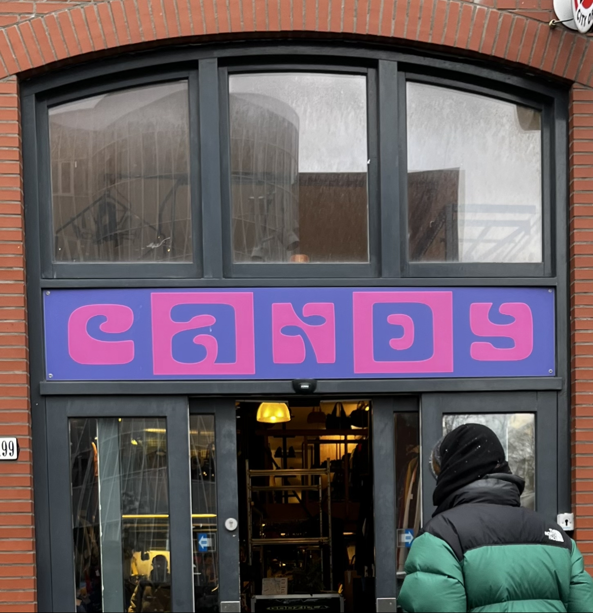
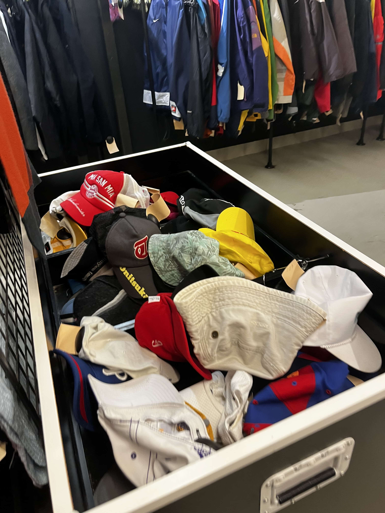
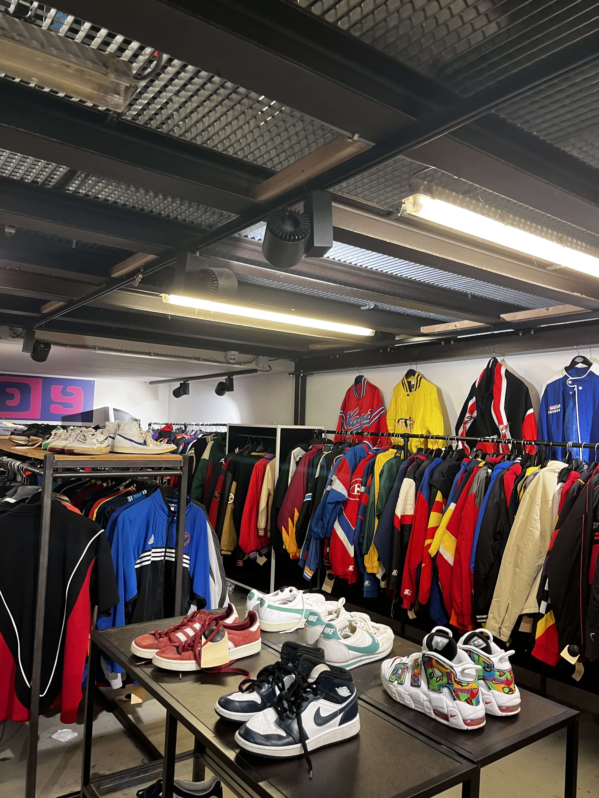
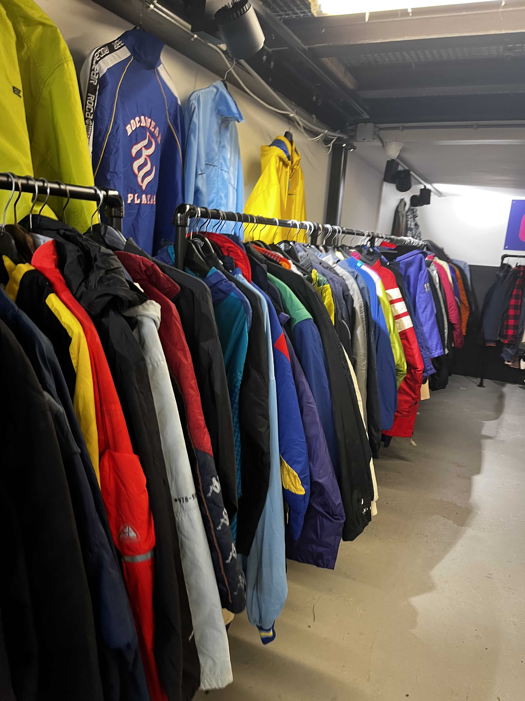
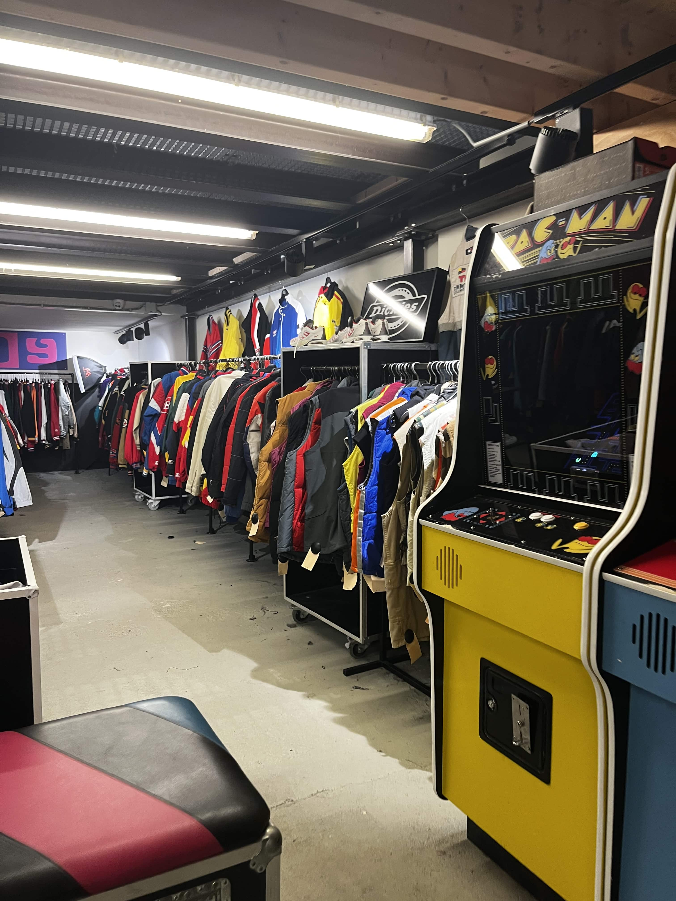
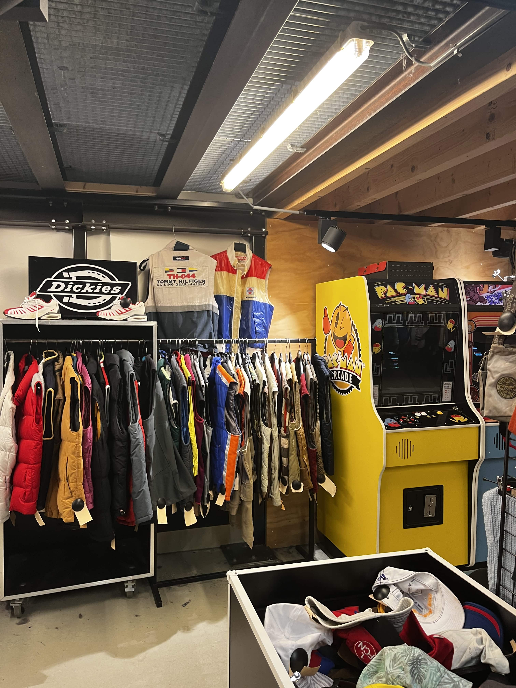
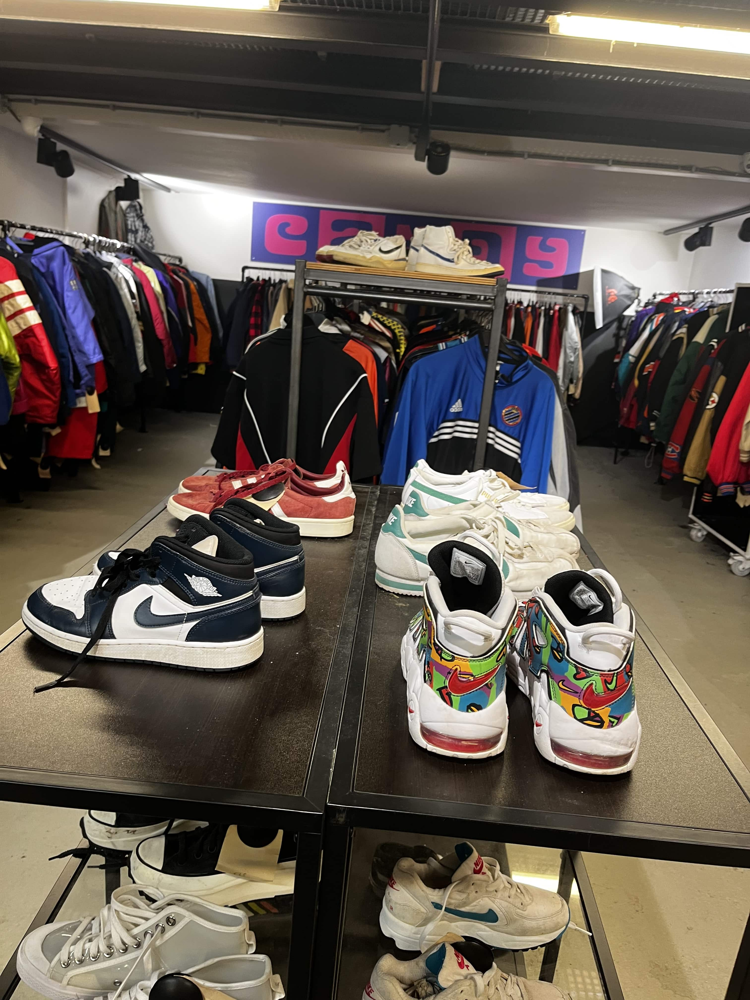

Candy
Waterlooplein

Waterlooplein 199
Review
Candy Store Waterlooplein is een Vintage kleding in Amsterdam. Voor veel bezoekers valt de prijzen aan de dure kant voor 2de hands producten. Maar hiervoor krijg je iets terug. Over het algemeen zijn de producten in een goede conditie. Je kunt zien dat er veel aandacht wordt besteed aan het selecteren van de producten. Unieke items zoals de voetbalshirts. Verder vriendelijk personeeel en een leuke plek om PacMan te spelen.
Prijzen: 2/4
Concept: 3/4
Personeel: 4/4
Hygiëne: 3/4
     